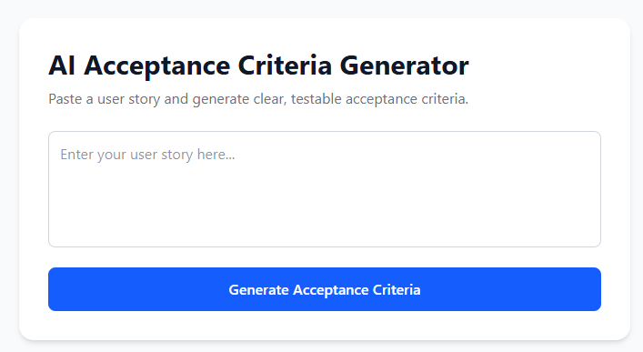

01
Acceptance Criteria Generator
An AI-powered tool that converts user stories into structured acceptance criteria to help turn requirements into clearer development tasks.
I built the frontend interaction and backend flow used to send user stories to an AI model and return generated acceptance criteria.
Project in progress